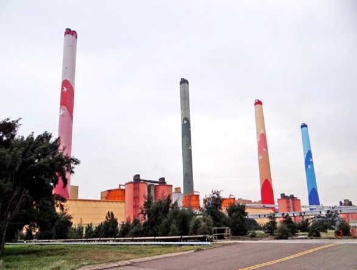
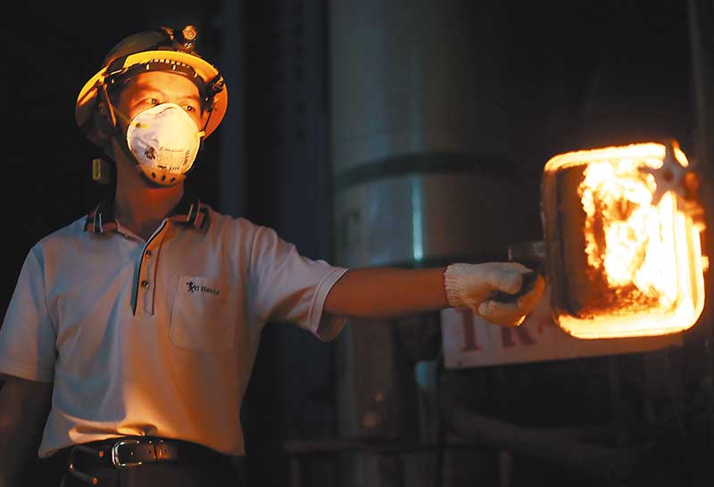

事件名稱：火力發電廠燃煤汙染
事件地點：台中市龍井區
事發狀況
位於台中港區的台中火力發電廠，擁有10部燃煤發電機，總發電量高達550萬仟瓦，是全世界最大的火力發電廠。為了扭轉民眾把火力發電廠和污染聯想在一起 的既有印象，發電廠全力打造綠色環境，在廠區內遍植樹木，還闢設休閒公園及園藝造景，景觀與一般的公園無異，吸引許多民眾前往參觀。
台中火力發電廠位於大肚溪出海口北側，廠區面積共281公頃，完全是抽取台中港計劃航道的砂填涘而成的新生地，是第一個經過環境評估核准後才興建的電廠， 於民國78年7月正式建廠發電。台中電廠為了樹立民眾優良印象，特地在廠內種植大量防風林抑制風砂飛揚，並興建廣大的休閒公園，還有漂亮的園藝造景，整個 綠地有56公頃，占廠區總面積的20％；5支高達250公尺的煙囪，除了投下鉅資裝設煤灰集塵器，減少煤灰從煙囪散出外，另又在外表漆上鮮豔活潑色彩，為 電廠增添不少生氣。因此，民眾進入發電廠都會被綠草如茵的景象所吸引。
鄭仁和形容，中火占地277.5公頃，興建前原是汪洋一片，「漲潮是海、退潮後是沙灘」，只要東北季風或颱風外圍環流接近，工地現場就是飛砂走石，連路都走不了，員工只能戴著露出兩隻眼睛、彷彿「藏鏡人」般的面罩施工。
就燃煤發電廠的發電規模而言，美國有座發電廠原先位居世界之冠，在我國台中火力發電廠建妥第10部發電機之後，取代美國地位，躍居世界第一，稱霸全球。台 中電廠靠燃燒煤炭發電，排放的煤煙裡以煤灰及二氧化硫的含量最多，如果未做妥善處理就直接從煙囪排放出去，附近地區必定被燻染得烏煙瘴氣，且二氧化硫會造 成酸雨，動植物幾乎很難生存。
由於風力發電成本，每度電要1.8元，而火力發電僅約1.1元，雖然風力發電的成本較高，可是每發一度的電卻能減少1公斤二氧化碳排放量，台電正朝風力發 電努力。遙望台中電廠，除了5根高聳的煙囪外，還有4台風力發電機，每台高度106公尺，有3支葉片；葉片轉速緩慢，每分鐘最多20轉，風速低於每秒3公 尺或高於25公尺，發電機就會自動停機，以維護機組安全。
調查結果
中央、地方齊定新規，讓台中火力發電廠的處境更艱難。但中火占全台發電量近2成，改成天然氣成本翻倍，整體火力發電更提供全台約8成的電量，在減少空汙與穩定供電之間，要如何取得平衡，已成為台電與新政府的一大挑戰。
環保署空保處長陳咸亨表示，經檢討決依空汙法的授權，預告訂定相關行政命令，讓天然氣電廠事先申請取得許可就得以滿載發電，不受空汙法取得固定汙染源操作許可證的限制，最快10月空汙季前上路。
台中市長林佳龍指出，減碳是國際趨勢，市府努力這兩年已有成績，為市民健康會持續監督中火。他說，秋、冬是台灣用電的低峰期，台電只要做好規劃，並擬定電力調度方案，根本不會有機組停機及供電停擺的問題。